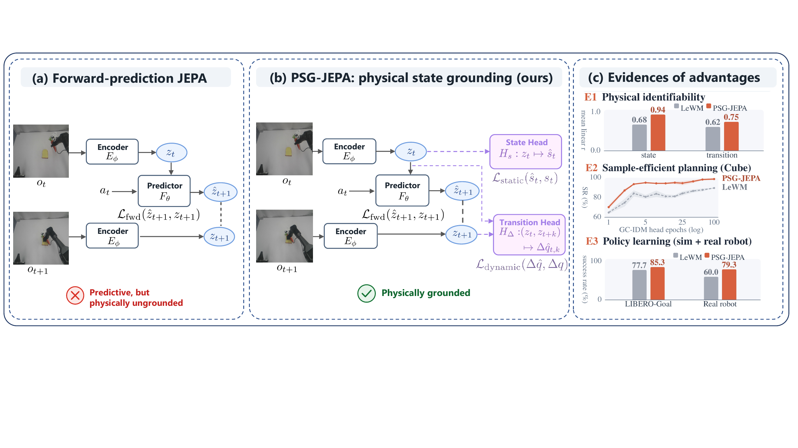
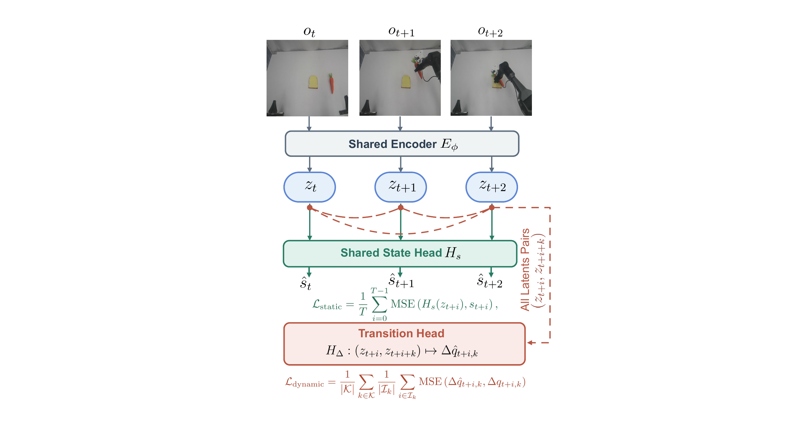
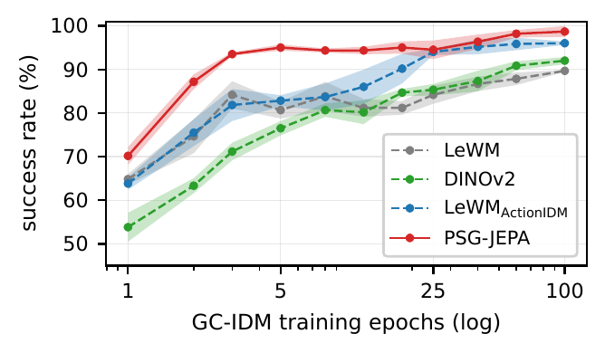
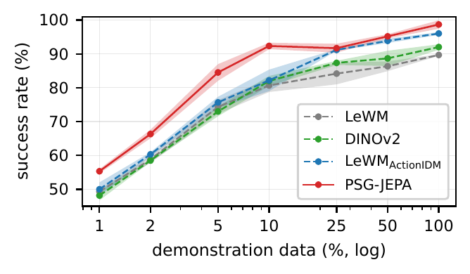
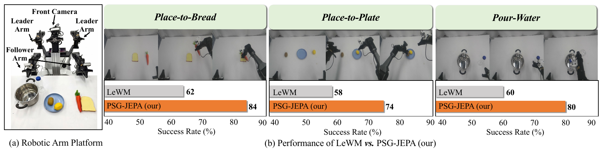

Abstract
JEPA world models learn by predicting future latents, but does forward prediction alone yield representations that expose the robot's physical state? We find that purely forward-predictive JEPA world models leave key physical quantities, such as end-effector orientation, hard to recover from their latents, a robot-centric identifiability gap. We introduce PSG-JEPA, an end-to-end JEPA world model that additionally grounds each latent in the robot's proprioceptive state (static grounding) and each temporally ordered latent pair in the multi-horizon joint-angle change it undergoes (dynamic grounding). Both grounding heads are used only during training and discarded at inference, so PSG-JEPA keeps the original JEPA inference cost. Across latent identifiability probes, goal-conditioned planning (OGBench-Cube and OGBench-Scene), multi-task policy learning (LIBERO-Goal), and real-robot manipulation, PSG-JEPA closes the identifiability gap and achieves the best overall performance. For example, it recovers end-effector yaw at r = 0.94 (versus 0.08 for a forward-only baseline), reaches 95% planning success after only 5 planner epochs, and improves average real-robot success from 60.0% to 79.3%.
Introduction
Joint-embedding predictive architectures (JEPAs) build world models by predicting future latents from past ones. This forward-prediction objective produces representations that are useful for rollout, yet it never asks the latent to expose the physical state of the embodiment. As the teaser figure shows, a forward-only JEPA can predict the next latent accurately while leaving robot-centric quantities, most sharply end-effector yaw, nearly unrecoverable from a single latent. PSG-JEPA keeps the forward-prediction backbone unchanged and adds two lightweight grounding objectives that tie latents to physical state and latents pairs to physical change. The grounding heads are discarded after training, so the closed identifiability gap comes at zero inference overhead and translates into more sample-efficient planning and stronger policy learning.

Method
PSG-JEPA retains the JEPA encoder–predictor backbone and its forward-prediction loss, and augments it with two grounding objectives applied to the same latents: LPSG = LJEPA + λg(Lstatic + Ldynamic). A shared state head regresses each latent to the robot's proprioceptive state (static grounding), while a transition head regresses each temporally ordered latent pair (zt+i, zt+i+k) to the net joint-angle change Δqt+i,k across multiple horizons (dynamic grounding). Grounding acts as an auxiliary signal during training only; both heads are removed at inference, leaving the encoder and predictor, and hence the inference cost, unchanged.

Experiments
Latent Identifiability
We freeze each encoder and fit linear (ridge) and non-linear (MLP) probes from the frozen latents to physical quantities on OGBench-Cube. Cells report linear / MLP Pearson r. PSG-JEPA makes robot proprioception, especially end-effector yaw, far more identifiable than a forward-only baseline.
| Category | Method | JointPos | EEPos | Gripper | EE-yaw |
|---|---|---|---|---|---|
| Baselines | LeWM | 0.71 / 0.69 | 0.99 / 0.99 | 0.93 / 0.96 | 0.08 / 0.08 |
| DINOv2 | 0.73 / 0.72 | 0.99 / 0.94 | 0.84 / 0.84 | 0.51 / 0.50 | |
| LeWMActionIDM | 0.75 / 0.72 | 1.00 / 0.99 | 0.96 / 0.98 | 0.11 / 0.10 | |
| Ours | PSG-JEPA | 0.83 / 0.81 | 1.00 / 0.99 | 0.97 / 0.98 | 0.94 / 0.98 |
| Category | Method | JointVel | GripVel | Action |
|---|---|---|---|---|
| Baselines | LeWM | 0.68 / 0.66 | 0.44 / 0.47 | 0.74 / 0.76 |
| DINOv2 | 0.51 / 0.39 | 0.20 / 0.12 | 0.54 / 0.45 | |
| LeWMActionIDM | 0.73 / 0.69 | 0.67 / 0.73 | 0.80 / 0.84 | |
| Ours | PSG-JEPA | 0.75 / 0.75 | 0.69 / 0.76 | 0.80 / 0.86 |
Goal-Conditioned Planning
Using a frozen encoder and a GC-IDM planner on OGBench-Cube, PSG-JEPA plans more efficiently than forward-only, action-supervised, and large-scale pretrained baselines, along both the optimization-budget and demonstration-data axes.


Policy Learning and Real-World Manipulation
On multi-task policy learning (LIBERO-Goal) PSG-JEPA improves success from 77.7% to 85.3%. On a physical dual-arm Cobot, using the same policy and evaluation protocol as the LeWM baseline, PSG-JEPA improves success on all three tasks.

BibTeX
@misc{yan2026forward,
title = {Is Forward Prediction Enough? Physical State Grounding for JEPA World Models},
author = {Haodong Yan and Jiaguan Zhu and Mingyuan Jia and Ruiqing Yin and Junjie He and Zhide Zhong and Junfeng Li and Jinxuan Lu and Hengtao Li and Tianran Zhang and Jiayi Chen and Wenxuan Song and Wen Chen and Yuxiang Gao and Haoang Li},
year = {2026},
eprint = {2608.06799},
archivePrefix = {arXiv},
primaryClass = {cs.RO},
url = {https://arxiv.org/abs/2608.06799},
}